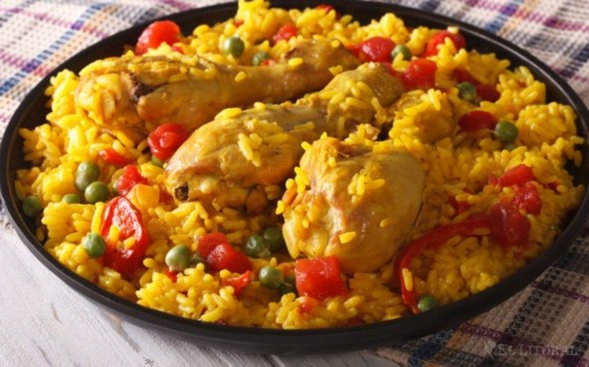

Descripcion
El arroz con pollo es un plato típico de América Latina y España con variaciones regionales según el país. Consiste en arroz cocinado con pollo, en presas o desmechado, verduras (ají pimentón, zanahoria en cubos, apio, habichuelas, cebolla, maíz desgranado, aceitunas, arvejas, alcaparras), y sazonado con especias (laurel, tomillo, cilantro, ajo preferiblemente morado)
